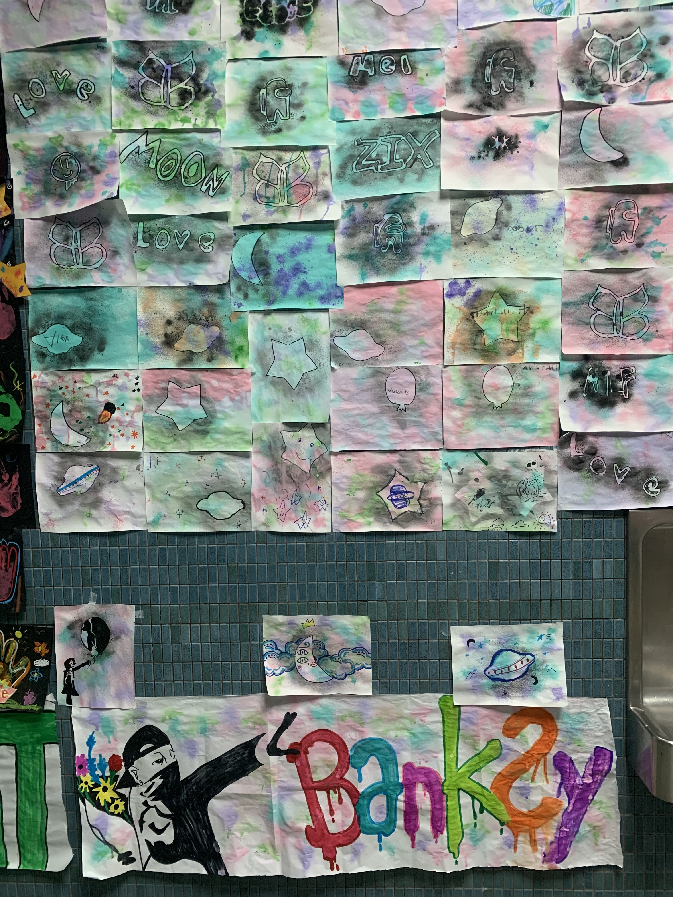

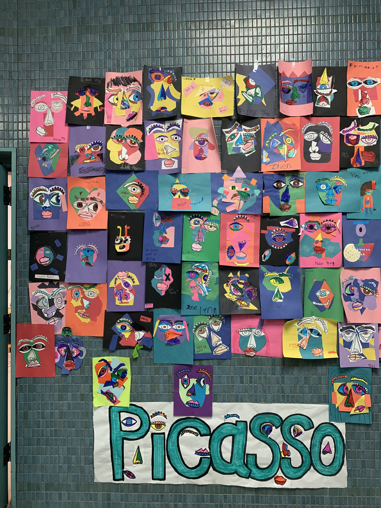

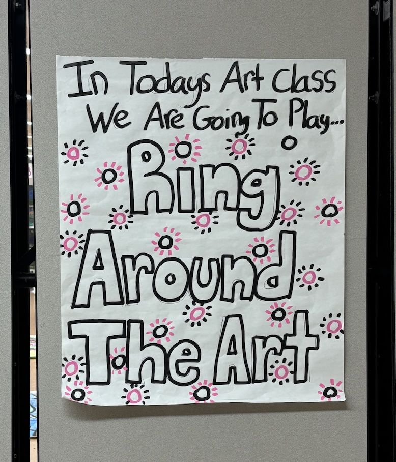

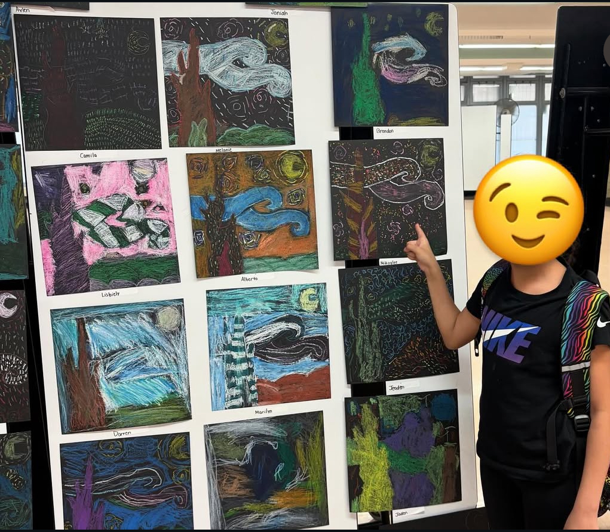
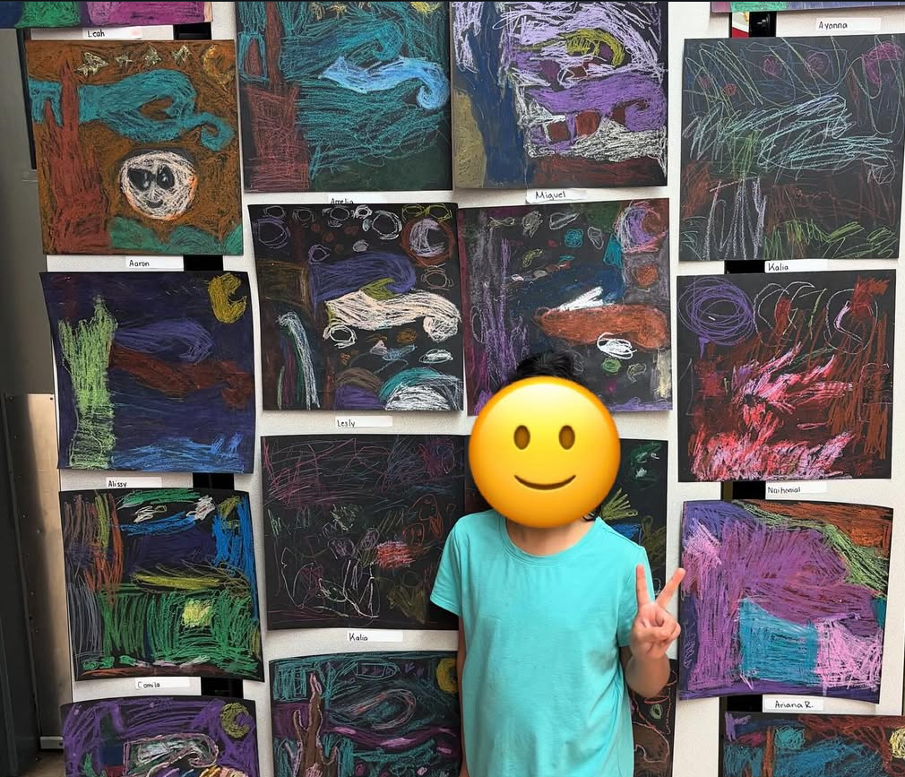
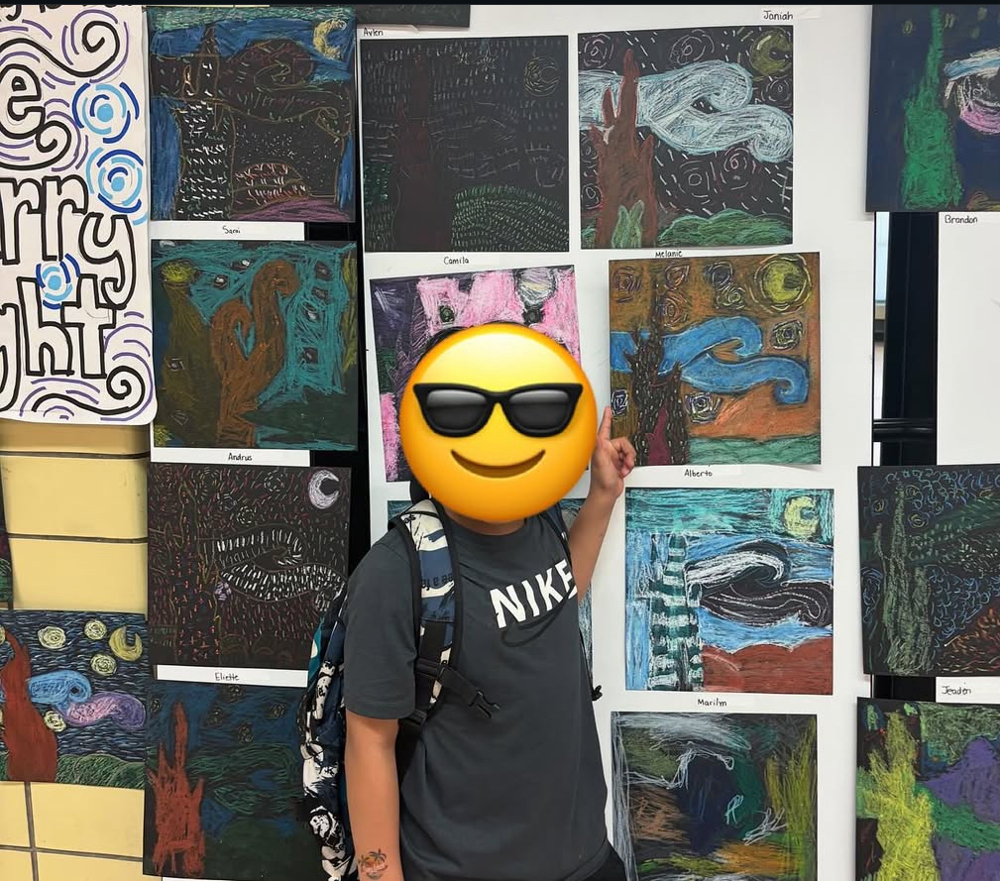
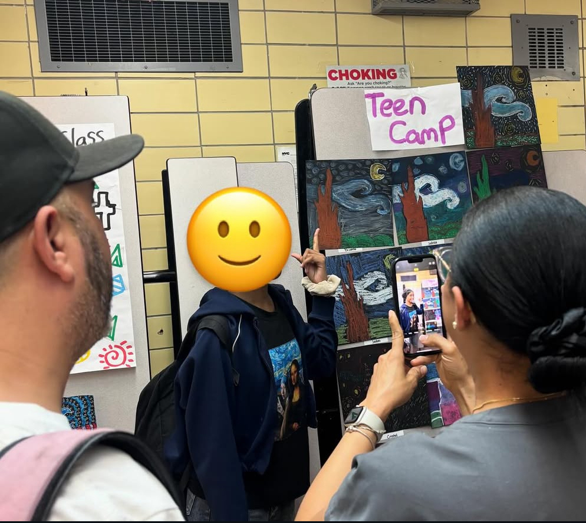
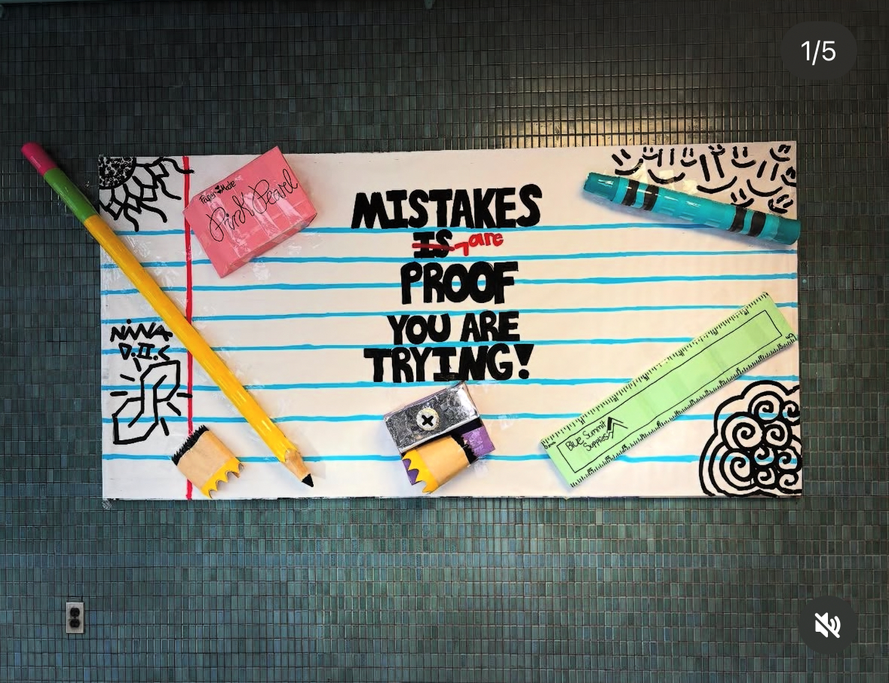

As the Art Specialist at the Center for Family Life (CFL) After-School Program, I design and teach art lessons inspired by art history and by unique annual themes that I develop to guide my students' creative journeys. My classroom is centered around artistic freedom and self-expression, where students are encouraged to explore their individuality, think creatively, and take pride in their own unique artistic voices. What makes this position especially meaningful is that it represents a full-circle moment for me — I now teach at the very school and in the same after-school program that once nurtured my own love for art. It's deeply fulfilling to stand where I once sat as a child, hoping to inspire this new generation of young artists just as my art teacher once inspired me.
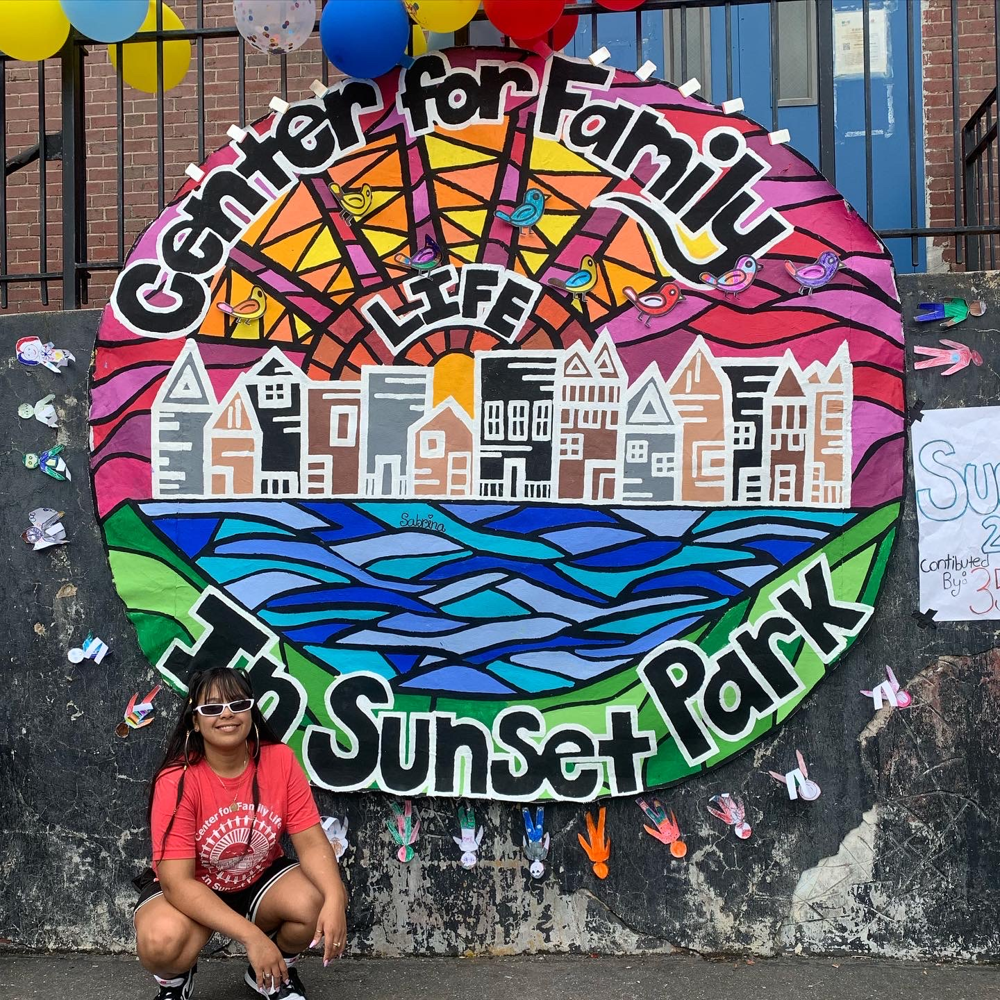
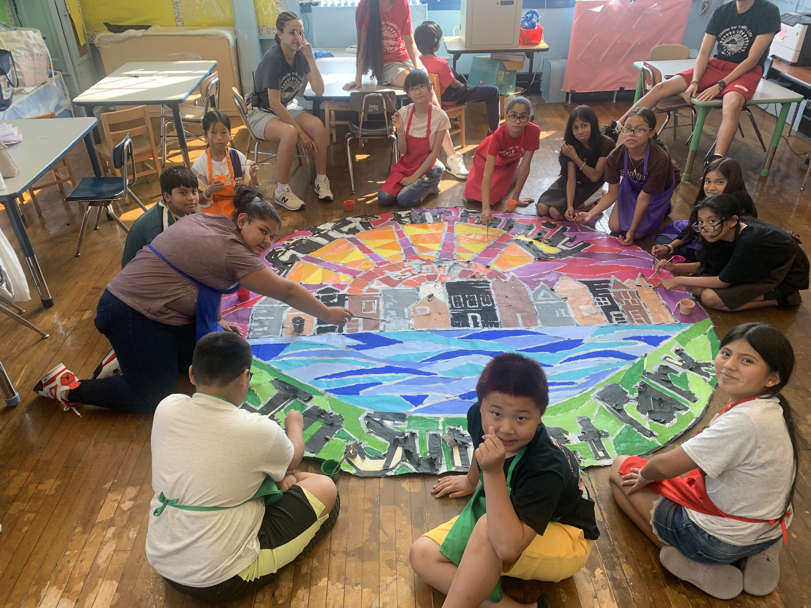
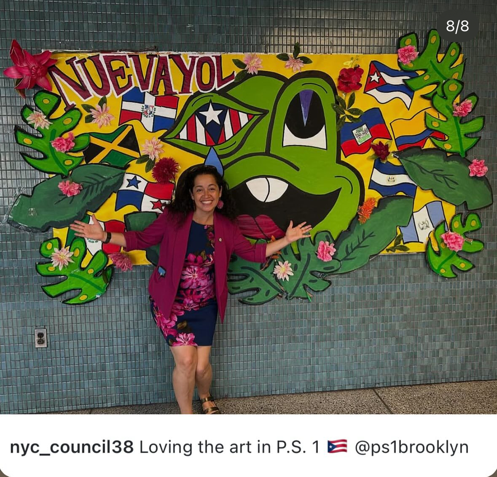
| Project Name | Year | Description | Community Artwork Displays |
|---|---|---|---|
| Summer Camp Gallery | 2023 | In this collection, campers explored the styles and techniques of renowned artists, reimagining their iconic works througyh their own creativity and perspective. Each piece celebrates the inspiration drawn from art history while showcasing the student's unique interpretations and bold experimentation. |

 |
| Winter Gallery | 2024 | In this project, students worked together to complete my version of a giant coloring book, inspired by my students' favorite characters, turning collaboration into a fun, creative game inspired by Keith Haring's musical art activities. Each piece celebrates teamwork, shared creativity, and the joy of making art together. Showing how collective effort can produce vibrant, playful results. |

|
| Spring Gallery | 2024 | Students explored techniques and interpretations of Starry Night, experimenting with oil pastels, color, and texture to create their own imaginative versions of this iconic masterpiece. Each piece reflects the student's personal expression while paying homage to Van Gogh's swirling, dynamic style. |
    |
| Yearly Buliten Boards | 2025 | I design and manage the school's monthly bulletin board themes, creating vibrant displays that transform the main hall into a space of storytelling. Each month, I develop a theme that reflects the season, a celebration, or an idea worth highlighting, using bold colors and thoughtful visuals to spark curiosity, joy, and a sense of childlike imagination for students and staff alike. |

|